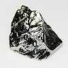

germanium

Definition: Germanium is a chemical element with the symbol Ge and atomic number 32. It is lustrous, hard-brittle, grayish-white and similar in appearance to silicon. It is a metalloid in the carbon group that is chemically similar to its group neighbors silicon and tin. Like silicon, germanium naturally reacts and forms complexes with oxygen in nature.
Source: Wikipedia
Wikipedia Page
Wikidata Page